Graph-based performance review (GPR)
Table of Contents
- 1. The problem
- 2. Graph-based Performance Review
- 3. Information Ingestion
- 4. Tools for ingesting meaningful information
- 5. Make it easy to identify someone's contribution to an initiative
- 6. Maintenance work is easier to visualize
- 7. The test of the time
- 8. Investigating high-leverage cases
- 9. Automated performance reports
- 10. Peer review everything
- 11. Automated feedback & many other career-supporting AI assistance features
- 12. References
1. The problem
The performance review is the process of evaluating people's contributions to a group's shared goal. It typically happens in companies where a team needs to evaluate employees' work, which is used to reward them with monetary bonuses, promote them to another position, or demand performance improvements.
There is an extensive list of pain points related to them, but I will reference just a few.
Fournier (2017) points out how we overemphasize things that happened recently (Recency bias), we do not prioritize time to prepare for them, and we all suffer from many different biases when analyzing them. For example, we compare people to ourselves and use ourselves as the scale of excellence.
2. Graph-based Performance Review
I idealized a Graph-based Performance Review (GPR), a system in which we represent projects, people, documents, feedback, and impact statements as graphs, offering a convenient set of tools to insert and retrieve information from them. It generates performance reports automatically and cumulatively. It enables peer review of more granular activity and makes it convenient to assess one's performance without depending on a person's manager.
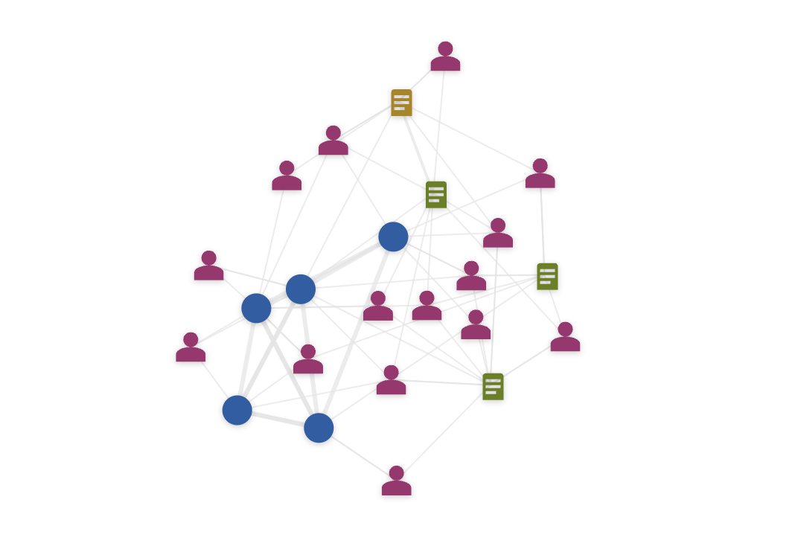
Figure 1: A graph shows the relations between people, projects, and documents.
As with everything these days, it has many potential GenAI features, like automatically generating performance reports, allowing people to query a project, document, or person, and much more.
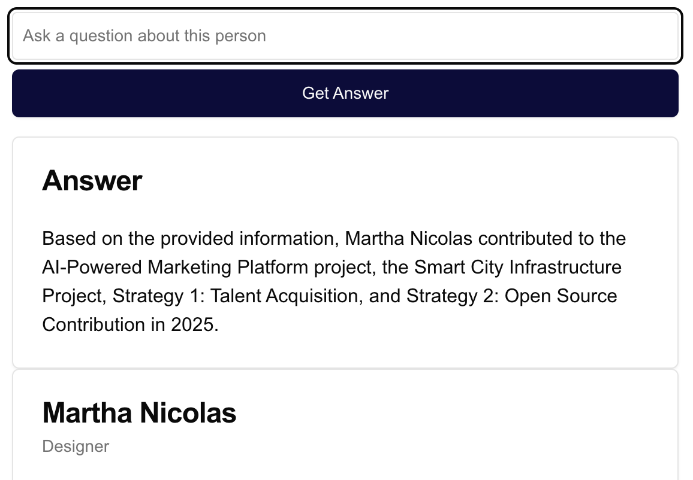
Figure 2: Asking questions in a graph item and let the AI agent navigate it to answer.
I did a prototype to make it easier to visualize it, and I will go through the main characteristics in the following sections - though it doesn't work as intended and some are not well represented in the prototype since I hit my patience budget for vibe coding.
3. Information Ingestion
For such a system to work, information should flow to it as a natural step in accomplishing work. Thus, integrations with systems like Jira, Github, Google Drive, etc., are a must.
For example, documents following a certain pattern (e.g., a tag or an identifier in the title) should automatically be linked to them, or pasting their link should make it easy to integrate with auto-completion for their description and linked documents.
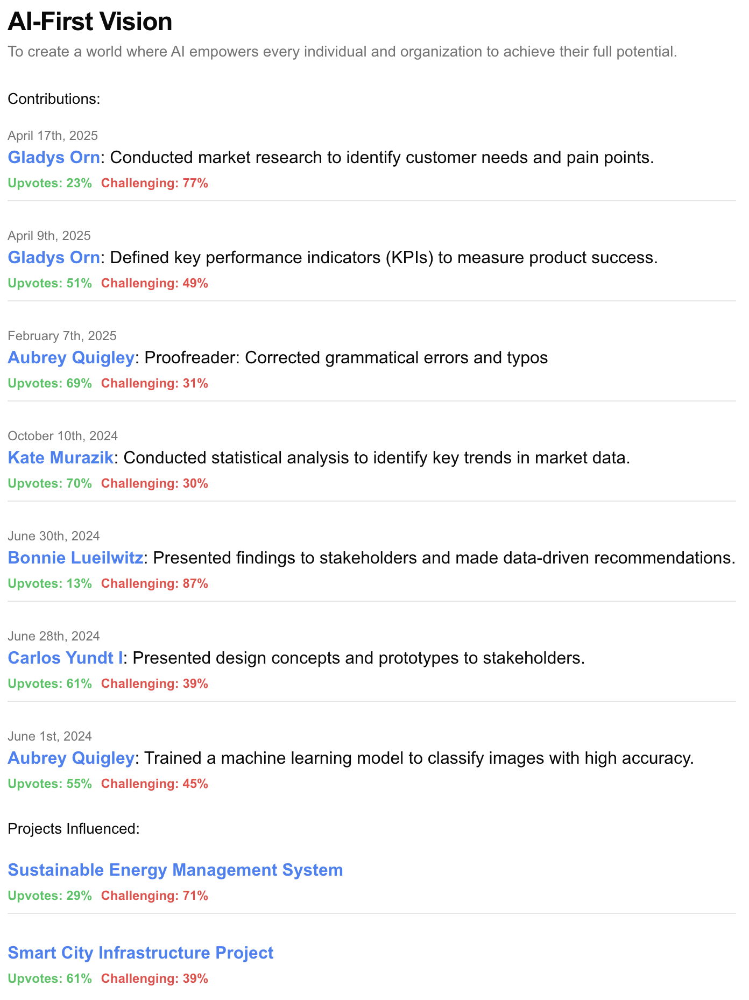
One can imagine the project granularity as a Jira epic or being able to easily attach assets to project elements in the form of Jira epics or GitHub repositories, which can automatically create connections between internal projects referenced in the code.
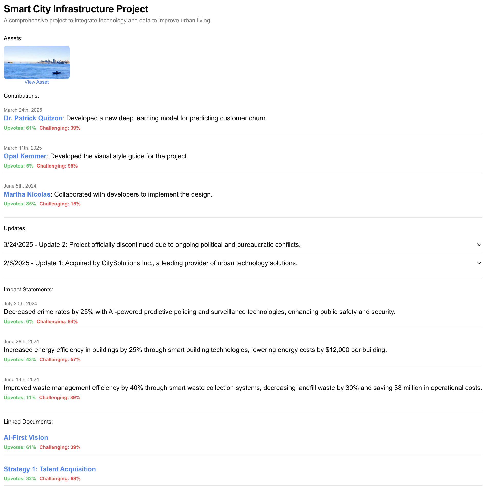
Figure 3: Projects should have a rich representation to clarify their consequences.
Other systems that keep information updated, such as team, career level, position changes, contributions, and feedback, should also automatically feed the person representation.
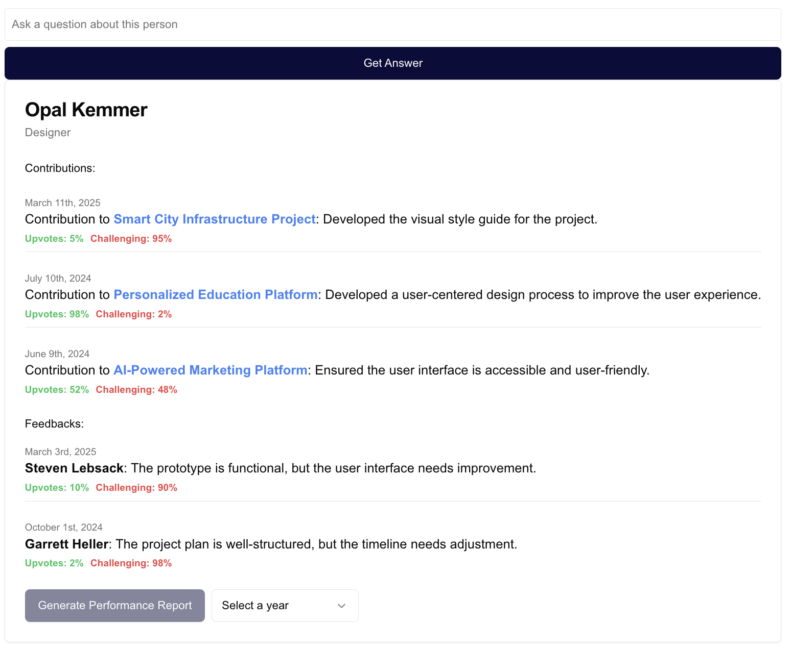
Figure 4: Many filters could be applied to a person's view, but their profile should be cumulative to enable a more accurate picture of their contribution to a company's long-term success.
4. Tools for ingesting meaningful information
A big issue with feedback is that it is hard to write, so most feedback is unhelpful: it lacks context, facts, effect, or what the user expected instead. AI assistants can help extract the most of feedback. The same goes for "Impact statements." We can often challenge claims, request facts and evidence, and help cover the most obvious challenges people would face when assessing that claim.
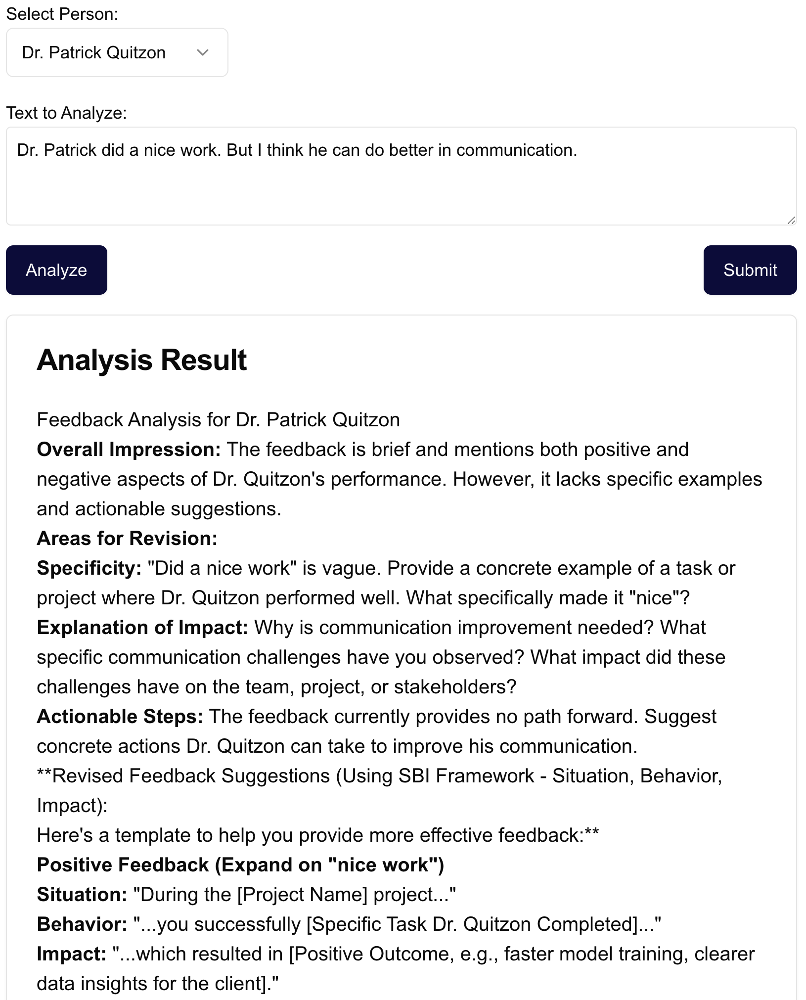
Figure 5: Pushing people to write better feedback using AI.
5. Make it easy to identify someone's contribution to an initiative
Even if someone creates a great impact statement for their performance report, it might lack how their involvement was important to the project. Detailing it is hard because a project contains multiple people, and describing what they did is useful for understanding the scope of a certain individual.
For example, two Data Scientists worked on a project that generated a $10M savings. Both will report this number in their performance reviews. But how should we attribute their contribution to it?
We need to know what the person did and how their peers see their contribution to solve it.
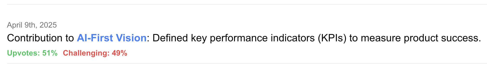
Figure 6: Better naming and accessibility can help the peer review feature provide the right weight to people's contributions
It is likely that we can automatically aggregate this information to clearly show each person's involvement in a project timeline.
6. Maintenance work is easier to visualize
Maintaining an important project means associating yourself with a node that has many connections. One does not need a major release in the period to make one's work visible. The system will capture one's activity to maintain an important node.
Figure 7: The ability to connect one project to another helps with the proper attribution of foundational projects that usually get lower visibility. Or projects that take a while until they support important initiatives and show their real value.
It can be extremely useful to internal platforms, too. We can link internal tools to the projects they support, showing more practically the importance of that tool in daily life as different people navigate the graph.
7. The test of the time
It is common to see rewards for leading indicators that fall short. A good performance evaluation system should make it easy to evaluate how previous contributions evolved. It will help recognize things that take longer to deliver value. It can also hold cases where people oversell projects in initial stages but are unable to carry them through.
Moreover, a performance report is generated, including statements about the influence and impact of documents and projects even though the person's activity that generated them happened in a previous period.
This evaluation should incentivize ownership, moving people to work on important and lasting components. It also helps them to see the patterns of what fails in the mid and long term, helping individuals to improve their skills. I expect it to get people closer to the signal and exclude the noise. This is extremely important to truth seekers, people who are
8. Investigating high-leverage cases
Promotions, especially for very senior levels, are extremely important to get right. In general, promotions are the only public reward signal a company shares about doing things right. When someone is promoted, they shape others' behaviors. Thus, wrong promotions are a catastrophe.
However, preparing promo packs is also very time-consuming, and one might not be able to make everything needed by the promo committee or whatever promotion process a company uses.
We can facilitate investigation using the AI Agent and let people ask questions about a person's work.
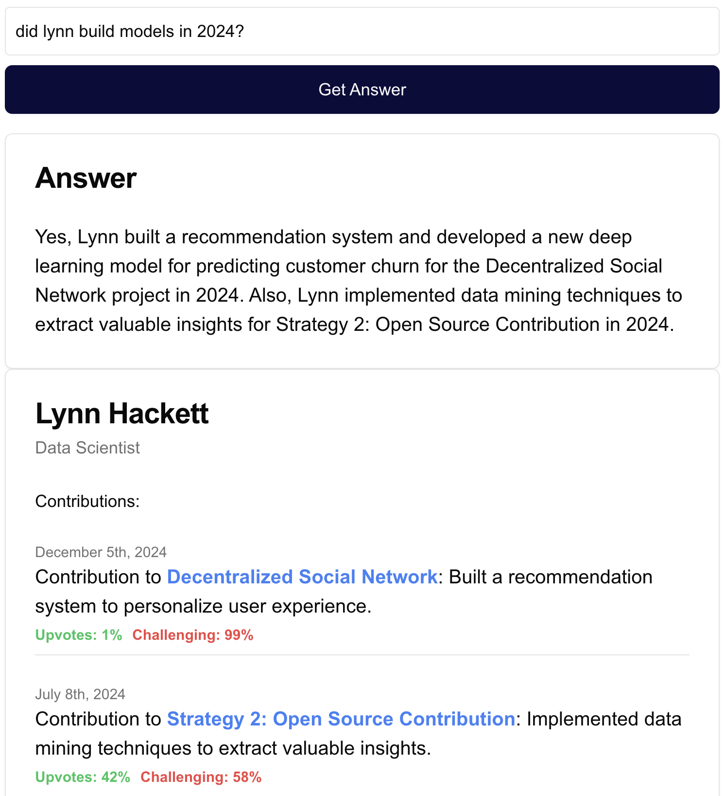
Figure 8: One can do deep dives about someone's performance and achievements for high-leverage decisions like a promotion without generating questions for their manager.
Filters can also help us see people doing the same kind of work at the proposed new employee level, making the next scope more tangible and comparable.
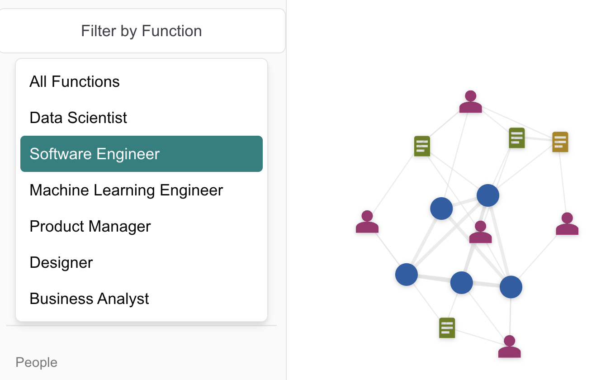
Figure 9: Filter people by their expertise, career level, and team, and find good examples of operating in different scopes.
Finally, the system itself could challenge or support a promotion nomination based on information it extracts from the graph. The AI Agent could have access to the career ladder, peer feedback, contributions, etc., and prepare it.
9. Automated performance reports
After a couple of years of managing people, I created an algorithm to write their performance reviews that I would execute manually. In general, I would combine all the input from different sources (activities, impact statements, peer feedback, self-assessment, my feedback, and assessment), find the patterns, collect the evidence, and seek some clarification.
I think all of it can be automated, which would completely relieve a people manager from it. A performance report generator should be available at all times, so people can also summarize their periods to check their opportunities continuously.
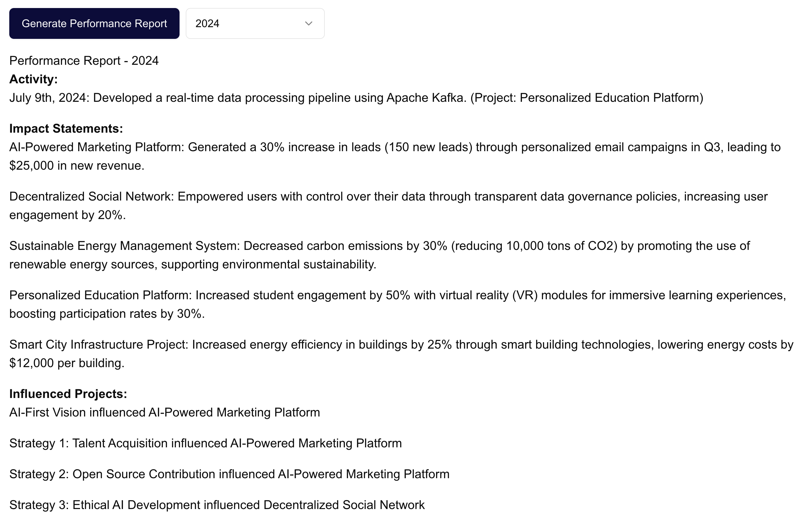
Figure 10: Generate reports by choosing a period. Automatically compiles, mixes, and contrasts all sources. It could also challenge what is unclear and suggest the person or the manager go after specific information.
10. Peer review everything
To ensure things are grounded in reality, people can upvote or challenge many different items, like contributions, the association of a project with a document/project, or performance statements. We could either make everything public or think of an accessibility policy.
This should appear in the performance review report to provide confidence in that information or at least to make people investigate and demand clarification.
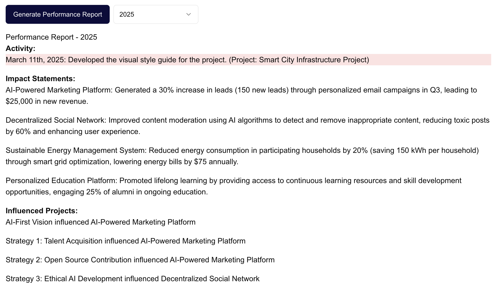
Figure 11: Peers and other people must have a say on others' contributions to ensure they are grounded on value generated by the business and by others working together. In the image, a contribution is highlighted in red because it had a challenge rate higher than 50% - a very arbitrary way of doing it.
11. Automated feedback & many other career-supporting AI assistance features
If one's work is well represented in the graph and an AI Agent has access to it, why couldn't it feedback the person using it? It can contrast the expectations about that person's work with their contributions and deliver feedback as soon as it sees a pattern.
It can also suggest people one can talk to after it identifies someone contributing to a particular type of project, projects, materials, and other resources one should look into to succeed on it.